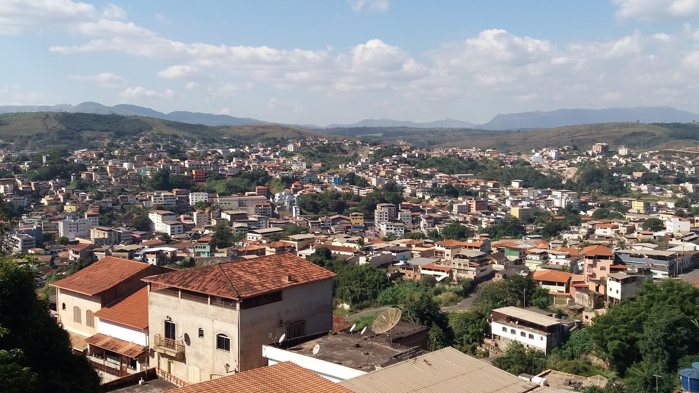
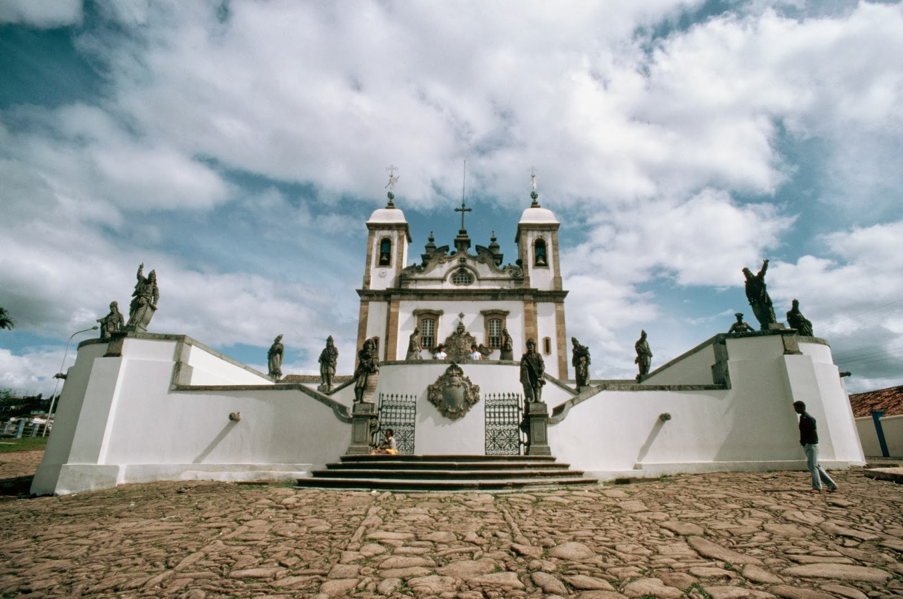

Conheça Congonhas
Congonhas é uma das cidades históricas mais importantes de Minas Gerais, conhecida principalmente pelo turismo religioso e pelas famosas obras do artista Aleijadinho.
A cidade recebe turistas de diversas regiões do Brasil devido ao seu patrimônio histórico, cultural e artístico, sendo um dos principais destinos do barroco mineiro.

⛪ Santuário do Bom Jesus de Matosinhos
O principal ponto turístico da cidade é o Santuário do Bom Jesus de Matosinhos, reconhecido como Patrimônio Mundial da UNESCO.
O local é famoso pelas esculturas dos 12 profetas feitas por Aleijadinho, consideradas uma das maiores obras da arte barroca brasileira.
Curiosidade
Os profetas de Aleijadinho são feitos em pedra-sabão e representam uma das obras artísticas mais importantes do Brasil.

🏛️ Principais pontos turísticos
- Santuário do Bom Jesus de Matosinhos
- Profetas de Aleijadinho
- Capelas dos Passos da Paixão
- Museu de Congonhas
- Basílica do Senhor Bom Jesus
- Centro Histórico
- Romarias e festas religiosas
🎨 Cultura e Arte
Congonhas possui forte tradição artística e cultural ligada ao período colonial mineiro. A cidade preserva importantes monumentos históricos, esculturas barrocas e manifestações religiosas tradicionais.
| Elemento cultural | Destaque |
|---|---|
| Arte barroca | Obras de Aleijadinho |
| Turismo religioso | Romarias e celebrações |
| Patrimônio histórico | Santuário da UNESCO |
| Esculturas históricas | 12 Profetas |
🍲 Gastronomia Mineira
Assim como outras cidades históricas de Minas Gerais, Congonhas também oferece pratos típicos da culinária mineira, valorizando sabores regionais e receitas tradicionais.
- Feijão tropeiro
- Frango com quiabo
- Torresmo
- Pão de queijo
- Doce de leite mineiro
- Queijo minas artesanal
📌 Informações rápidas
| Informação | Detalhe |
|---|---|
| Estado | Minas Gerais |
| Tipo de turismo | Religioso, histórico e cultural |
| Principal destaque | Profetas de Aleijadinho |
| Reconhecimento | Patrimônio Mundial da UNESCO |
✨ Congonhas em uma frase
“Congonhas preserva a grandiosidade da arte barroca mineira através da história, fé e cultura brasileira.”